Praktická robotika a zpracování obrazu (BPC-PRP) online skripta
Tento text představuje online skripta předmětu BPC-PRP - povinného předmětu 3. rocniku bakalářského studijního oboru Automatizační a měřicí technika na Fakultě elektrotechniky a komunikačních technologií Vysokého Učení Technického v Brně.
Skripta rovněž obsahují texty týkajici se dalších oblastí robotiky, které již ale nejsou vyžadovány samotnou náplní předmětu.
Autoři
Ing. Adam Ligocki, Ph.D.
Ing. Tomáš Lázna
Ing. Petr Gábrlík
Ing. Tomáš Jílek, Ph.D.
Ing. František Burian, Ph.D.
Ing. Tomáš Horeličan
Distribuce Linuxu
Hovoříme-li o operačním systému Linux, máme na mysli jádro operačního systému, které je spravováno autoritou (autor Linus Benedict Torvalds) a ta zajišťuje integritu veškerého kódu, který je do jádra OS zaintegrován.
Pro interakci jádra operačního systému s okolím je třeba přidružených programů (např balíčkovacích systémů, grafického rozhraní, a dalšího podpůrného software). Sadu těchto programů souhrnně označujeme Distribuce.
Distribuce je dodávána a garantována konkrétní právnickou osobou (komerční subjekt, organizace, atd.). Distribuce jsou většinou vzájemně nekompatibilní na binární úrovni.
Často používané distribuce:
- Debian
- nejstabilnější distribuce, nepodporuje však nový hardware (stable obsahuje 2-5 let starý kód)
- správa balíčků 'apt'
- Ubuntu
- derivát Debianu
- Nejrozšířenějí distribuce na domácích stanicích.
- Snahou je urychlit testování a distribuci k uživatelům bez znatelného snížení nestability
- správa balíčků 'apt'
- Mint
- derivát Ubuntu.
- Snaha o grafické rozhraní které zachovává idiomy MS Windows.
- Doporučený pro přechod z MS Windows
- správa balíčků 'apt'
- RaspberryOS (dříve Raspbian)
- derivát Debianu upravený pro minipočítač Raspberry Pi
- správa balíčků 'apt'
- Arch Linux
- Distribuce orienovaná na nejaktuálnější jádro.
- Nižší stabilita ale vyšší kompatibilita s nejnovějším hw.
- Doporučeno pro pokročilejší uživatele i vzhledem k široké konfigurovatelnosti
- správa balíčků 'yay'
- Fedora
- Derivát RedHat Enterprise Linux
- správa balíčků 'rpm'
- ElementaryOS
- Minimalistická a rychlá distribuce.
- Vhodná pro starší a slabé počítače.
- správa balíčků 'apt'
... a mnoho dalších (výčet není konečný)
Instalace Linuxu vedle Windows
Tuto metodu zvolte, pokud chcete mít linux rychlý, nebo máte postarší stroj
Tvorba instalačního média
Rozdělení disku / vytvoření prostoru pro instalaci
Zahájení Instalace Linuxu
Instalace Linuxu s použitím virtulizace VirtualBox
Instalace VirtualBoxu
VirtualBox si nainstalujte podle návodu na příslušném operačním systému.
Postup pro Windows a Mac.
Pro Linux instalace záleží na distribuci a používaném baličkovacím systému. Na Debianu použijte příkaz sudo apt install virtualbox. Poté bude možné VB aktivovat z terminálu voláním virtualbox, nebo skrze ikonku v seznamu nainstalovaných programů.
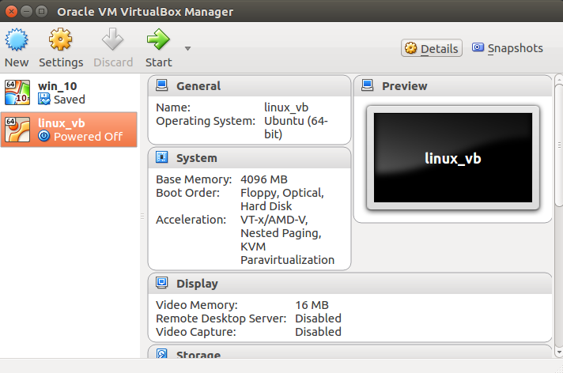
Příprava instalačního média
Stáhněte si obraz instalačního disku Ubuntu 20.04.
Vytvoření virtuáního stroje
Pomocí tlačítka "New" vytvořte nový virtuální stroj. Pojmenujte si jej, zvolte typ operačního systému, nastavte velikost operační paměti (vhodné 4GB a více), vytvořte nový virtuální disk, vyberte typ virtuálního disku (VDI), zvolte dynamickou alokaci disku a na poslední obrazovce vyberte umístění virtuálního disku na svém počítači a zvolte maximální možnou velikost virtuálního disku (32 - 64GB).
Nyní v hlavní obrazovce Virtual Boxu zvolte nově vytvořený virtuální stroj a přejděte do nastavení.
V záložce "System" můžete měnit velikost dedikované operační paměti, měnit počet jader procesorů, která budou pro virtuální stroj dostupná (je doporučeno dvě a více) a také můžete zapínat/vypínat HW akceleraci pro virtuální stroj.
Dále v záložce "Display" světšete množství dedikované video paměti na maximum (128MB).
V záložce "Storage" klikněte na položku s obrázkem CD a následně úplně v pravo klikněte pravým na ikonku CD s malou šipečkou. Tím otevřete okno pro nastavení cesty k instalačnímu obrazu Ubuntu, které jsme dříve stáhli na počítač. Zavřete nastavení tlačítkem OK.

Nyní v hlavním okně Virtual Boxu aktivujte virtuální stroj tlačítkem start.
Pokud je vše nastaveno korektně, stroj nabootuje z instalačního obrazu.
Zahájení Instalace Linuxu
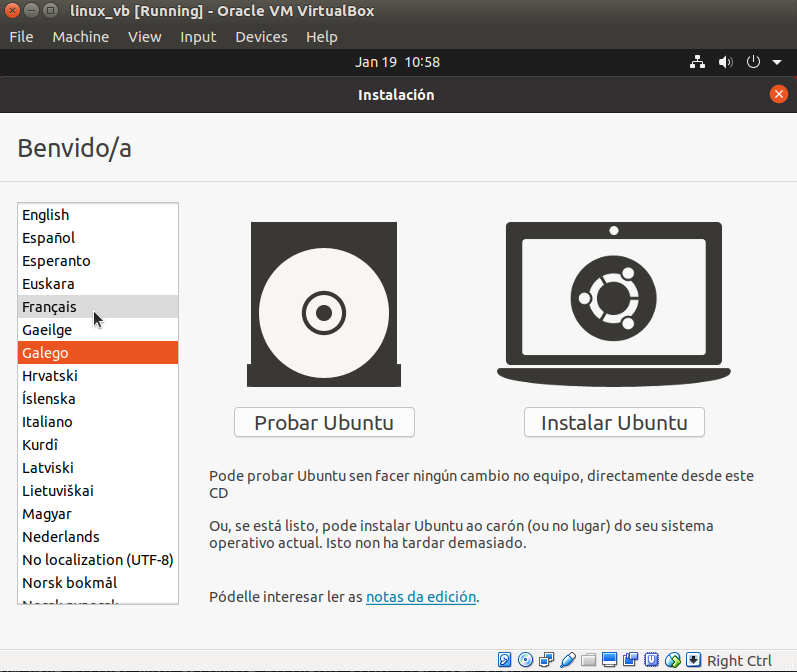
Zvolte jazyk operačního systému (doporučena angličtina), zvolte rozložení klávesnice (doporučeno English US), a nechte pokračovat "Normal Installation".
Dále se Vás proces dotáže, zda chcete "Smazat disk a nainstalovat Ubuntu". Protože instalujeme do virtuálního stroje, necháme rozdělení disku na instalátoru.
Nyní zvolte časové pásmo a dále si vytvořte účet s heslem.
A dále už jen počkejte, až se systém doinstaluje a provede se reset virtuálního stoje.
Po opětovném nabootování v horní liště okna virtuálního stroje zvolte záložku "Devices" a "Insert Guest Additions CD Image". Za okamžik vyskočí okno, které se dotáže zda má aktivovat autorun vloženého CD. Souhlaste. Systém si vyžádá heslo a poté se doinstalují ovladače pro virtualizovaný hardware.
Po dalším restartu máte připarevený virtuální stroj s nainstalovaným Linuxem Ubuntu 20.04.

Instalace Linuxu s použitím virtulizace VmWare
Instalace VmWare Player
Příprava instalačního média
Vytvoření virtuálního stroje
Zahájení instalace Linuxu
Orientace v systému
Souborová struktura Linuxu se odvozuje od tzv. kořene (root), který značíme jako / (vzdáleny ekvivalent C:/ na Windows).
V kořenovém adresáři pak nalezneme složky jako:
bin/- obsahuje binárky (spustitelné soubory operačního systému).home/- adresář, který obsahuje domovské složky uživatelů, tj vaše soubory.dev/- obsahuje soubory které mapují hardware počítače (interní a externí disky, sériovou linku, usb, síťové rozhraní, atd.).tmp/- dočasná složka. Zde si programy odkládají svá dočasná data.media/- místo kde se připojují externí disky.etc/- složka obsahuje konfiguraci systému a všech nainstalovaných aplikací
V Linuxu neexistuje ekvivalent fyzického dělení na disky. Fyzické disky lze připojit do libovolné složky. Ze zadané cesty k souboru tedy nelze přímo usoudit na kterém fyzickém disku se data nacházejí. To je velmi odlišné od Windows kde cesta vždy začíná písmenem fyzického disku, a možnost připojit disk do složky přichází až od systému souborů NTFS.
Složka tmp vede na většině distribucí do virtuálního disku v paměťi RAM počítače. Je tedy extrémně rychlá, ale za cenu že se při
vypnutí počítače smaže. Spousta nástrojů ji používá pro vytvoření mezivýsledků kompilace.
Po příhlášení do konzole se obvykle nacházíte v domovském adresáři, tj na místě /home/<jmeno_uzivatele>/
Spuštění příkazového řádku
Vytvoření souboru
touch - (touch file)
Vytvoří soubor na disku
touch jmeno_souboru ... Vytvoří soubor jmeno_souboru na disku.
Kopírování souboru
cp - (copy)
cp zdrojovy_soubor cilovy_soubor ... vytvoří novou kopii zdrojovy_soubor nazvanou cilovy_soubor
cp ../secter.txt secret_folder/supersecret.txt ... vem soubor secret.txt, který se nachází o složku výš a zkopíruj ji do složky secret_folder. Kopie původního souboru se bude jmenovat "supersecret.txt"
P5esun souboru
mv - (move)
Příkaz původně pro přesun souboru, hlavně se však využívá pro přejmenováni soborů.
mv old_name.txt new_name.html ... přejmenuje soubor "old%name.txt" na "new_name.html"
Smazání souboru
rm - (remove)
Smaže soubor/složku.
rm old_file.txt ... vymaže soubor "old_file.txt"
rm -r my_folder ... smaže složku. Při mazání složky vždy musíme použít modifikátor rekurze (-r). Ten říká, že se má rekurzivně smazat také obsah složky.
Změna práv k souboru
chmod - (change file mode)
Změní přístupová práva k souboru.
chmod 777 /dev/ttyUSB0 ... umožní všem uživatelům PC přístup na USB port s pořadovým číslem 0. Pro detail fungováni přístupových práv ve file systému viz [7].
Vypsání obsahu souboru
cat - (Concatenate FILE(s) to standard output)
Program vypíše do termínálu obsah souboru.
cat ~/my_config_file.txt ... vytiskne v terminálu obsah zvoleného souboru
Vytvoření nového adresáře
mkdir - (make directory)
mkdir my_folder ... vytvoří nový adresář s názvem "my_folder"
Smazání složky
rmdir - (remove directory)
Smaže složku z disku. Složka musí být prázdná
rmdir my_folder ... smaže složku.
Zjištění aktuální nastavené složky
pwd - print working directory
Vypíše aktuální složku.
pwd
Zm2na aktuáln9ho adresáře
cd - (change directory)
Změna složky.
cd my_directory ... přesun do adresáře s názvem my_directory
cd ~ ... návrat do domovské složky (v linuxu nazýváme "home")
cd .. ... návrat o adresář výš (dvojtečka)
cd / ... návrat do kořene file systému (v linuxu nazýváme "root")
cd ../my_folder ... vrať se o adresář výš a pak se přesuň do adresáře "my_folder"
cd . ... přesuň se do "současného adresáře". V podstatě nic neudělá. Příklad ilustruje existenci symbolu pro aktuální adresář (tečka).
Výpis souborů ve složce
ls - (list)
Vypiš všechny soubory a složky (složka je taky typ souboru) v aktuálním bodě file systému.
ls
ls -la ... vypíše všechny soubory, včetně sktytých a přidá k výpisu detailní informace
Editace textu pomocí GNU nano
nano
Editace textu podobná poznámkovému bloku
nano jmeno_souboru --- zahájí editaci souboru
Klávesové ovládání:
Ctrl + X - ukončení programu. Program se zeptá, zda má uložit změny
Editace textu pomocí GNU vim
vim (visual editor improved)
Editor textu, který pracuje v příkazovém režimu, tedy uživatel zadává editoru příkazy a editor na základě těchto příkazů upravuje text.
Pro jeho použití je nutné si zapamatovat velké množství příkazů a klávesových zkratek. Pokud to však zvládnete, může být práce s ním rychlejší než s nano. Není doporučován začátečníkům.
Kdyby se Vám přeci jen povedlo vim zapnout, vězte že jej vypnete kobinací kláves Shift + Z + Z (držíme shift a dvakrát zmáčkneme klávesu 'Z').
Stahování souborů ze sítě pomocí GNU wget
wget
Program pro stahování souborů ze sítě.
Příklad stažení posledního releasu wordpresu:
wget https://wordpress.org/latest.zip
Manuálové stránky
man - (manual) referenční manuál operačního systému
Rychlá pomoc když zapomenu, jak pracovat s daným programem
man ls ... vytiskne v terminálu manuál k programu ls
Eskalace oprávnění
sudo
Meta příkaz. Operace specifikovaná za tímto příkazem bude provedena v režimu oprávnění administrátora operačního systému. Obvykle používáme, když zasahujeme do systémových souborů.
sudo mkdir /etc/config ... vytvoří složku "config" v systémovém adresáři "/etc".
sudo rm -r / ... příkaz rekurzivně smaže celý adresář "root" (v podstatě smaže celý disk včetně OS)
Balíčkovací systém
apt
Jedná se o Balíčkovací systém Debianu. Na Linuxu nejčastěji instalumeme programy tak, že si jej stáhneme z veřejného repozitáře, tedy obvykle ověřeného a bezpečného serveru.
Při instalaci musíme vždy disponovat administrátorskými právy.
Příklad instalace balíčku s názvem 'git':
sudo apt update --- aktualizuj záznamy o repozitářích na internetu
sudo apt install git --- nainstaluj program git
Souborový manažer
mc
Midnight Commander - grafické prostředí pro pohyb v souborovém systému. Připomíná MS Dos.
mc
Vypíná se klávesou F10.
Slovo na závěre
Pokud jste v Linuxu nováčky, hlavně se nebote experimentovat. Ideálně si nainstalulte systém do Virtual Boxu a udělejte si zálohu virtuálního disku. Když se Vás podaří systém rozhasit, stačí si natánout backup a jedete dál.
Git - Verzovací systém
Git je distribuovaný systém pro verzováni a management zálohování zdrojových kódů. Obecně ale Git funguje dobře pro verzování libovolného textu. Primární motivací k výuce Gitu v rámci tohoto předmětu je fakt, že Git je dnes nejrozšířenějí verzovací systém v komerční sféře a zároveň je na webu dostupná obrovská paleta Git-based online verzovacích služeb.
Instalace Gitu na Linuxu
V případě, že pracujeme na distribuci Debian, Git nainstalujeme následovně:
sudo apt install git
Princip fungování
Primární funkcí Gitu je verzování textových souborů. Jedním dechem je potřeba dodta, že Git NENÍ vhodny pro verzování binárních souborů. Vyvíjíme-li tedy program a verzujeme vývoj v Gitu, vždy verzujeme pouuze zdrojové kódy, nikdy ne zkompilované spustitelné soubory (binárky).
Zároveň Git umožňuje velmi efektivní spolupráci mnoha lidí na stejném projektu (repozitáři). Vývojáři mohou pracovat společně, případně každý na separátním branchi. Důležité pravidlo však je, že dva lidé nesmí přepsat stejný řádek kódu ve dvou různých commitech. To způsobi tzv. konflikt. Obecné doporučení je, aby dva lidé neměnili stejný soubor.
Ve srovnání s SVN je ale Git tzv. decentralizovaný systém. To znamená, že v systému repozitářů neexistuje žaden nadřazeny, důležitější repozitář, či něco ve smyslu centrálního serveru. Všechny repozitáře mají stejnou funkcionalitu a jsou schopny udržovat kompletní historii celého repozitáře a ponohodnotně komunikovat se všemi ostatními klony. Praxe je však taková, že obvykle existuje repozitář, který funguje jako centrální místo pro výměnu commitů mezi vývojáři. Takový repozitář se obvykle jmenuje "origin". Důležité však je, že kterýkolik repozitář, si může z originu stáhnout kompletní historii a tak v případě selhání originu nedojde ke ztrátě dat, protože každý vývojář může mít jeho plnohodnotnou kopii na svém počítačí.
Obvykla práce s Gitem vypadá následovně:
- Na serveru vytvoříme repozitář projektu.
- vývojáři si naklonujou repozitář na lokální počítače. Z jejich pohledu loklálních repozitářů je server tzv "origin".
- vývojáři na lokálních počítačích vytváří kód a commitujou.
- na konci dne každý vývojáž pushne (nahraje) své denní commity na origin.
- na druhý den ráno si každý fetchne (stáhne) commity kolegů z dne předchozího.
Základní terminologie
Vymezme si několik základních pojmů, abychom si rozuměli.
repozitář (repo)
Sada verzovaných souborů a záznamy o jejich historii. Pokud je repozitář uložen na našem počítači, nazýváme jej lokální repozitář (local repo). Jeli uložen na jiném stroji, hovoříme o vzdáleném repozitáři (remote repo).
klonování (cloning)
Stažení repozitáře z remote repa. Klonujeme v okamžiku, kdy na lokálním počítači repozitář neexistuje.
snapshot
Stav repozitáře v konkrétním bodě v historii.
diff
Rozdíl mezi dvěmi snapshoty. Tedy rozdíl stavu verzovaných souborů.
commit
Záznam, který obsahuje referenci na předchozí, následujicí snapshot a diff mezi nimi. Zároveň každý commit má svůj unikátní dvaceti bytový hash, který jej jednoznačně identifikuje v rámci repozitáře.
push
Nahrání nových comitů na remote repo.
fetch
Stažení commitů z remote repo na lokál. Fetchujeme, pokud na lokále máme repozitář naklonovaný, ale nemáme stažené nejnovější commity.
větev (branch)
Řetězec na sebe navazujicích commitů. Ze základu má každý repozitáž jednu větev ("master", někdy "main"). Probíha-li však vývoj několika funkcionalit vedle sebe, je možné tyto vývoje rozdělit do zvláštnich větví a připojit je spátky k hlavní větni, až je funkcionalita dokončená.
Přehled příkazů
git init
Inicializace repozitře. Z obvyklé složky v souborovém systému vytvořím repozitář.
Repozitář se od obyčejné složky liší tím, že v sobě obsahuje skrytou složku s názvem .git a ta obsahuje historii repozitáře.
git init ... inicializuje repozitář
git add
Příkaz přidává změny vytvořené od posledního commitu do tzv. indexu. Index je soubor změn, které budou součástí nejbližšího commitu. Díky mezistupni index je možné commitnout jen některé změny, které jsme od posledního commitu vytvořili.
git add myfile.txt ... přidá do indexu změny provedené nad souborem myfile.txt
git add . ... přidá do indexu všechny aktuální změny
git commit
Vytvoř nový commit, který je odvozený od posledního commitu v současné větví, a zahrni do commitu změny (diffy), které jsou v indexu.
git commit -m "komentář k danému commitu" ... vytvoří nový commit v rámci větve, ve které se nacházíme
git checkout
Příkaz slouží k přecházení mezi snapshoty.
git checkout . ... vrať větev do stavu posledního commitu (zahoď všechny do té doby vytvořené změny)
git checkout abcdef ... přepni mě do stavu, který vznikl po commitu s hexadecimálním označením abcdef
git checkout master ... přepni mě do stavu posledního dostupného commitu na větvi master
git clone
Příkaz vytvoří klon vzdáleného repozitáře na lokále. Klonujeme-li, není potřeba inicializovat repozitář pomocí git init. Metadata repozitáře se stáhnou automaticky s obsahem.
git clone https://adresa_vzdaleneho_repozitare.git ... vytvoří klon daného repozitáře na lokálním stroji
git remote
Příkaz vytvoří klon vzdáleného repozitáře na lokále. Klonujeme-li, není potřeba inicializovat repozitář pomocí git init. Metadata repozitáře se stáhnou automaticky s obsahem.
git remote -v ... vypíše konfiguraci vzdálených repozitářů
git remote add origin https://adresa_repozitare.git ... přidá do lokálního repozitáře alias vzdáleného repozitáře s danou adresou
git remote remove origin ... smaže alias origin na vzdálený repozitář
git push
Odešle nové commity vytvořené na lokále na vzdálený repozitář.
git push origin master ... odešle na mastera nové commity vytvořené v rámci větvě (branche) master
git fetch
Stáhne z remotu commity do lokálního repozitáře. Stažené komity se ale nestanou součástí větve. Změny zůstanou pouze zapsány v paměti.
git fetch origin ... stáhne nové commity ve všech větvích z originu na lokál
git fetch origin master ... stáhne nové commity pouze pro větev master z originu na lokál
git merge
Na aktuální větví vytvoří nový commit tak, že spojí naagregované diffy dvou různých větví. Tím pádem se v součacné větvi objeví všechny změny, které byly vytvořeny v jiné větví. Větve se tak spojí.
git merge cool_branch ... na současné větví vytvoří nový commit, který obsahuje všechny změny větve cool_branch
git pull
Kombinace příkazů git fetch a git merge. Obvykle se používá při stažení změn ze serveru. Příkaz nejprve stáhne commity z vzdáleného repozítáře (provede fetch) a následně je připojí do současné větve (provede merge).
git pull origin master ... stáhne z originu nové commity na větvi master a přidá je do lokální větve master
git diff
Vytiskne rozdíl stavu repozitáře mezi dvěma commity.
git diff abcdef 012345 ... vytiskne rozdíl mezi commity, které jsou identifikovány hexadecimálními hashy abcdef a 012345
git status
Zobrazí současný stav změn provedených od posledního commitu, včetně zobrazení změn, které jsou již přidány do indexu.
git status ... vytiskne současný stav změn
git log
Vytiskne chronologicky výpis commitů spolu s jejich metadaty (časem vytvoření commitu, popiskem, identifikačním hashem, atd.)
git log ... vytiskne historii současné větve
git stash
Slouží pro ukládání a načítání změn do zásobníku. Vhodné například, když si všimnete, že píšete kód na jiné větvi, než byl záměr. Pomocí git stash uložíte změny do zásobníku, přepnete se na jinou větev a změny si ze zásobníku vytáhnete.
git stash ... Uloží změny provedené od posledního commitu do zásobníku a vrátí větev do stavu, v jakém byla po posledním commitu (jako by jste zdrojový kód nikdy nenapsali).
git stash pop ... Vytáhne změny uložené ze zásobníku a aplikuje je na současný stav (jako by jste kód právě ručně napsali).
Cvičení
Několik scénářů se kterými se můžete během vývoje software potkat. Vyzkoušejte si je opakovaně, aby jste si vryli do paměti způsob práce s Gitem. Zároveň doporučuji si příklady nejprvé projít v příkazové řádce, aby jste chápali zůpsob, jakým Git funguje na nejnižší vrstvě a následně si cvičení absolvovali i v grafickém rozhraní Vašecho vývojového prostředí.
Základní obsluha
- Vytvořte si repozitář.
- Vytvořte v něm 2 textové soubory a do každého napište několik řádků.
- Přídejte provedené změny do indexu a následně změny commitněte.
- Nyní zeditujte jeden soubor a opět jej commitněte.
- Zeditujte druhý soubor a změny commitněte.
- Vytvořte si účet na GitHubu, a založte si tam nový repozitář.
- Přidejte vzdálený repozitář jako "origin" do lokálního repozitáře a pushněte změny na origin.
- Ve vebovém prostředí ověřte obsah repozitáře.
- Na jiním místě v počítači, nebo na jiném počítači si naklonujte právě pushnutý repozitář.
- V novém klonu proveďte změnu a commitněte jí pushnete na origin.
- V původní složce pullněte nové commity z originu.
- Příkazem git log si prohlédněte historii.
Konflikt
Příklad, co se stane, když dva vývojáří změní tentýž kód.
- Po vzoru předchozího cvičení si vytvořte na počítači, případně na dvou počítačích dvě kopie repozitáře, který bude mít společný origin na webu.
- V prvním klonu upravte konkrétní řádek souboru, commitněte a pushněte.
- V druhém klonu upravte tentýž řádek, commitněne a pushněte (push zahlásí chybu).
- Nyní jsme si vyrobili konflikt. Ve stejném bodě v historii větve repozitáře proběhly dvě změny,které se navzájem vylučují (tzv. conflict).
- Konflikt opravíme tak, že v druhém klonu, který nedokázal pushnout provedeme pull z originu.
- Nyní nahlédněme do souboru, který obsahuje konflikt. Konflikt je označen speciální syntaxí <<<<<<< lokalni_zmena ======= zmena_z_originu >>>>>>>. Vyberte verzi, která je žádoucí a speciální syntaxi odstraňte. Tím je konflikt vyřešen.
- Zavolejte příkaz git commit bez dalších parametrů a provede se commit s automatickým popiskem, že se jedná o řešení konflitku.
- Pushněte nový commit na origin a poté pullněte jej v původním repozitáři.
- Příkazem git log si prohlédněte historii.
Doporučené materiály
Užitečný rádce při potížích s Gitem (cs)
Build system CMake
CMake je soubor nástrojů, které zjednodušují kompilaci projektů a knihoven takovým způsobem, aby byly nezávislé na operačním systému a kompilátoru. Funguje tak, že pomocí jednotného konfiguračního souboru CMakeLists.txt vygeneruje Makefile pro UNIX-like systémy a pro Windows generuje MSVC pracovní prostory. Velkou výhodou CMake je správa závislostí - aplikace si mohou definovat na jakých knihovnách jsou závislé, přičemž CMake kontroluje, jestli jsou tyto knihovny dostupné a navíc v požadované verzi. Další velkou výhodou je možnost vytvářet jak spustitelné soubory tak knihovny pomocí jedné jednoduché konfigurace umístěné v CMakeLists.txt.
Ukázkový soubor CMakeLists.txt pro aplikaci:
cmake_minimum_required(VERSION 3.7)
project(MyCoolRobot)
set(CMAKE_CXX_STANDARD 17)
add_executable(MyCoolRobot main.cpp)
Ukázkový soubor CMakeLists.txt pro knihovnu:
cmake_minimum_required (VERSION 3.7)
project (MyCoolLibrary VERSION 0.1 LANGUAGES CXX )
include(GNUInstallDirs)
set (CMAKE_CXX_STANDARD 17)
file (GLOB SOURCES src/*.cpp )
file (GLOB HEADERS include/*.h)
add_library(libmycoollibrary ${SOURCES})
target_include_directories(libmycoollibrary PUBLIC
$<BUILD_INTERFACE : ${CMAKE_CURRENT_SOURCE_DIR}/include>
$<INSTALL_INTERFACE : include>
PRIVATE src)
install (TARGETS libmycoollibrary EXPORT MyCoolLibraryConfig
ARCHIVE DESTINATION ${CMAKE_INSTALL_LIBDIR}
LIBRARY DESTINATION ${CMAKE_INSTALL_LIBDIR}
RUNTIME DESTINATION ${CMAKE_INSTALL_BINDIR})
install(DIRECTORY include/DESTINATION ${CMAKE_INSTALL_INCLUDEDIR})
install(EXPORT RoboUtilsConfig DESTINATION share/MyCoolLibrary/cmake)
export(TARGETS libroboutils FILE MyCoolLibraryConfig.cmake)
Kompilace cmake projektu y p59kayov0ho 58dku
V případě, že máme nějaký projekt, který používá CMake a chceme jej spustit, provedeme to pomocí příkazů:
cd MyCoolRobot
cmake .
make
./MyCoolRobot
Remote development v prostredi CLion
Clion je integrované vývojové prostředí vyvíjené firmou JetBrains. Jedná se o zajímavou alternativu ke konvenčním prostředím jako je například Eclipse nebo NetBeans. Oproti těmto uvedeným prostředím Clion vyčnívá zejména kvůli své rychlosti, přehlednosti a modernosti. Díky napojení na ekosystém firmy JetBrains je možné do studia doinstalovat spoustu rozšiřujících pluginů přinášejících podporu pro nové jazyky, vývojářské nástroje atp. Velkou výhodou může být i integrovaná práce s Gitem.
V tomto manuálu bude rozebráno použití prostředí Clion v předmětu BPC-PRP tedy jako nástroje pro vývoj firmware mobilního robotu založeného na platformě KAMBot. Nejprve bude stručně rozebrán build system CMake. Poté se manuál již bude věnovat CLionu a to zejména jeho instalaci, vytvoření jednoduchého projektu typu Hello World a jeho zprovoznení. Dále je popsána stěžejní kapitola tohoto manuálu, a to vzdálený vývoj umožňující vzdálené programování Raspberry Pi pomocí standardního počítače. Na konci je popsán jednoduchý projekt blikání LEDkou a kapitola zabývající se odstraňováním nejčastějších problémů se vzdáleným vývojem.
Příklady v tomto manuálu byly zpracovány ve verzi Clion 2018.3, je tedy možné, že se v budoucnosti některé postupy budou měnit.
Instalace CLion
Pro Debian/Ubuntu
sudo snap install clion
Pro Windows
Stáhněte instalační balík ze stránky https://www.jetbrains.com/clion/ po kliknutí na "GET FREE 30 DAY TRIAL".
Spousťte stažený EXE soubor
Registrace studentským účtem
Studenti mají nárok na bezplatné využívání plné verze po dobu studia, což se též týká všech produktů firmy JetBrains.
Získání plné verze je možné pomocí postupu na stránce https://www.jetbrains.com/student/.
Studenti VUT musí pro registraci použít emailovou adresu id@vut.cz
Registraci nalezneme pod Help/Register
Otevření cmake projektu
Založení nového projektu
Nejprve vytvoříme jednoduchý HelloWorld projekt, ve kterém se seznámíme s procesem vytvoření projektu, prostředím a vývojem na lokálním počítači. Po spuštění CLion nás přivítá úvodní obrazovka se seznamem naposledy otevřených projektů, kde klikneme na tlačítko "New Project".
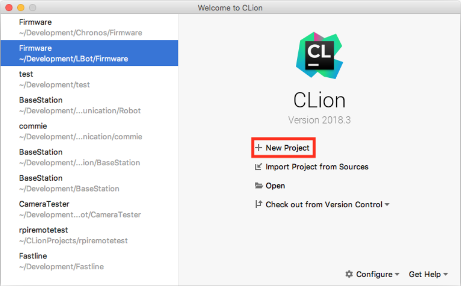
Po kliknutí se nám otevře okno s konfigurací nového projektu, kde nastavíme cestu, kde chceme mít projekt vytvořený a standard jazyka C++, v našempřípadě C++17.

Po kliknutí na "Create" nás přivítá samotné vývojové prostředí tak jak je zobrazeno na obrazku.
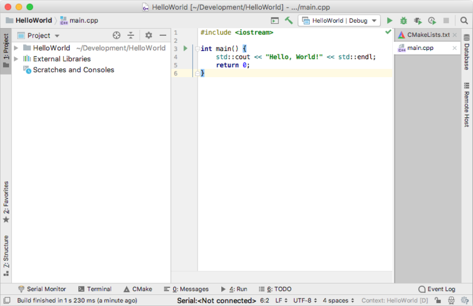
Pojďme se nyní podívat, co se na obrazovce nachází.
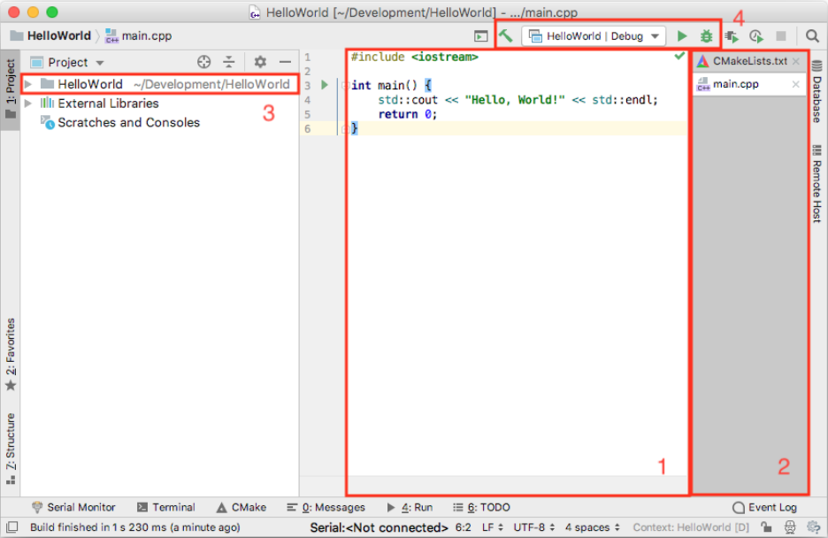
- podokno s aktuálně editovaným zdrojovým kódem
- aktuálně otevřené soubory
- soubory v projektu
- zleva: kompilace projektu, výběr targetu, kompilace a spuštění, kompilace aspuštění v debug módu
Verze CMake dodávaná v Raspbianu je bohužel relativně stará, zatím co CLion předpokládá použití relativně novou verzi, pro vyřešení tohoto problému je nutné změnit v souboru CMakeLists.txt verzi CMake z 3.12 na 3.7 tak jak je zobrazeno ve výpisu:
NOTE: Dnes jiz pravdepodobne neplati a Raspbian obsahuje znatelne novejsi verzi CMake.
cmake_minimum_required(VERSION 3.7)
project(HelloWorld)
set(CMAKE_CXX_STANDARD 14)
add_executable(HelloWorld main.cpp)
Nyní klikneme na tlačítko pro kompilaci a spuštění, kdy se nám nejprve ve spodní části obrazovky zobrazí okno s průběhem kompilace a následně s konzolí spuštěného programu:
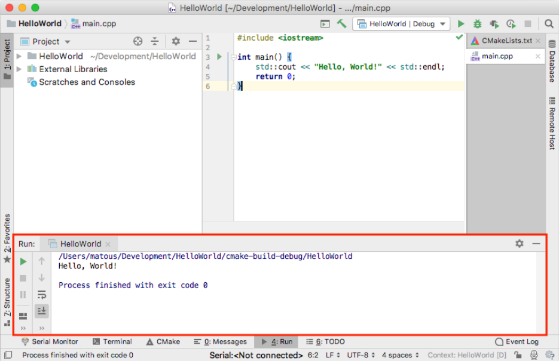
Při debugování se breakpointy přidávají kliknutím vedle čísla řádku. Po přidání breakpointu je nutné program spustit v debug módu v horní části okna. Po kompilacise ve spodní části zobrazí okno debuggeru. Navigace v debuggovaném kódu probíhá pomocí šipek v debuggovacím okně.

Pro přidání nové třídy do projektu klikneme v podokně se soubory projektu na náš projekt pravým tlačítkem, najedeme na "New" a tam zvolíme "C/C++ Class", jak je zobrazeno na obrázku.
Při přidávání a odebírání souborů je nutné, aby všechny .cpp soubory byly uvedeny v CMakeLists.txt.
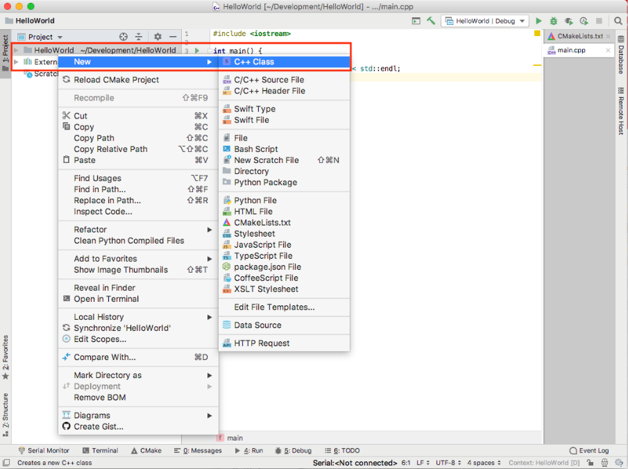
CLion obsahuje spoustu funkcí a možností, jejichž popsání je zcela nad rámec tohoto návodu, doporučuji tedy si s ním pohrát a vyzkoušet, co všechno se v něm dá dělat a jak efektivně. Dobré je rovněž si všímat toho, když je řádek označený žlutě, většinou se jedná o CLion doporučující nějaké zlepšení kódu.
Kompilace programu
Spuštění programu
Ladění programu
Vzdálený vývoj
Vzdálený vývoj (remote development) znamená, že výpočetně náročné vývojové prostředí běží na běžném počítači, zatímco kompilace a spouštění programu probíhána cílovém počítači. Tímto způsobem lze například velmi pohodlně programovat embedded hardware případně servery. Velká výhoda je, že například jde z Windows nebo MacOS programovat aplikace pro Linux, což nemusí vždy být možné kvůli chybějícím knihovnám napřiklad i2c-dev. Funkcionalita vzdáleného vývoje byla doprostředí CLion přidána ve verzi 2018.3.
Pro nakonfigurování vzdáleného vývoje je nutné nejprve přejít do nastaveníprostředí CLion (Preferences). Zde ve stromu vybereme "Build, Execution, Deployment" a položku "Toolchains" viz obrazek. Dále klikneme na tlačítko "+".
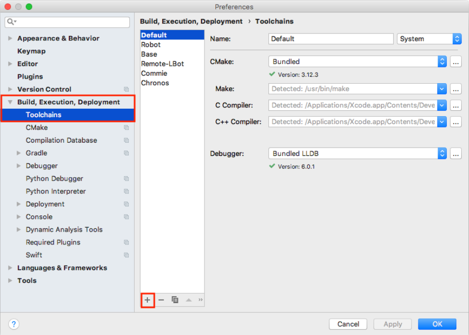
Následně vyplníme jméno toolchainu a volbu "System" přepneme na "RemoteHost" tak, jak je to zobrazeno na obrazku. Následně klepneme na ikonu složky upoložky "Credentials" a nastavíme je podle konfigurace našeho robotu. Pokud konfigurace Raspberry Pi nebyla měněna, lze použít hodnoty uvedené v tabulce a zobrazené na obrázku. Na Raspberry Pi musí být povoleno SSH.
 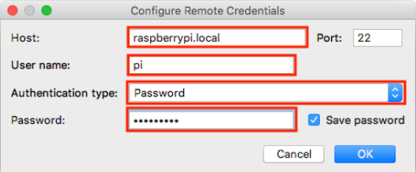
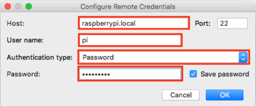
| parametr | hodnota |
|---|---|
| Host | raspberrypi.local |
| Port | 22 |
| User name | pi |
| Password | raspberry |
Po kliknutí na OK, se CLion pokusí připojit k danému Raspberry Pi a zkontroluje,zda jsou všechny potřebné programy k dispozici. Připojování je vidět na obrazku a úspěšné připojení je vidět na dalsim obrazku.
 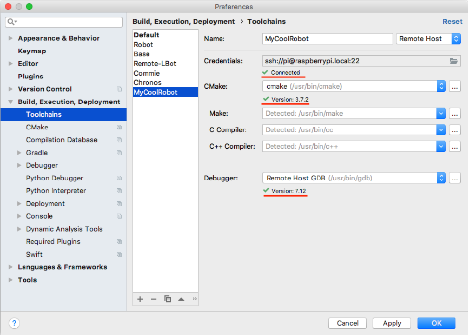
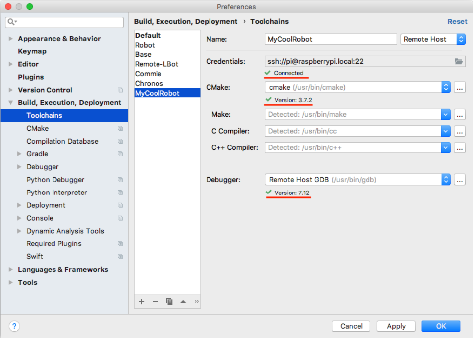
Dalším důležitým krokem je konfigurace CMake, ta se provádí rovněž v okně Preferences tak jak je zobrazeno na obrazku.
 Po kliknutí na "+" nakonfigurujeme CMake tak aby používal náš nový toolchain,tak jak je to zobrazeno na obrázku a klikneme na OK.
Po kliknutí na "+" nakonfigurujeme CMake tak aby používal náš nový toolchain,tak jak je to zobrazeno na obrázku a klikneme na OK.
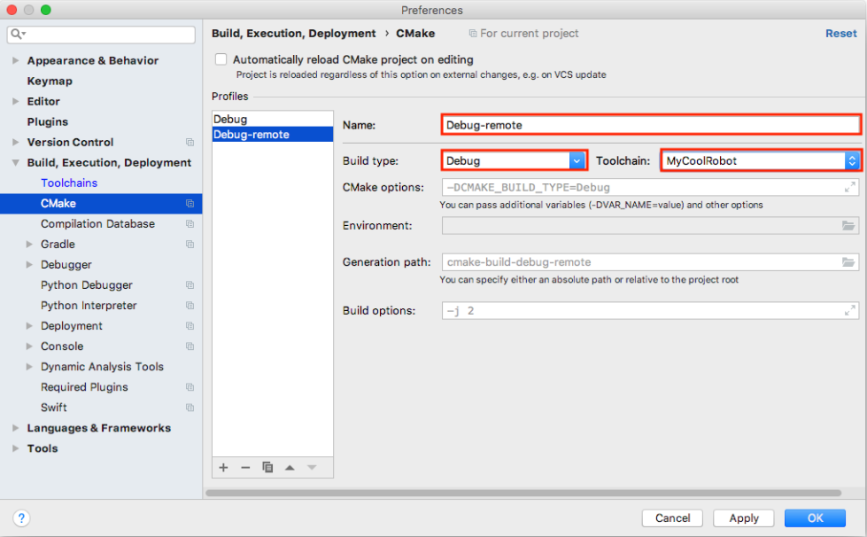
Po kliknutí na OK proběhne upload souborů na Raspberry Pi, po uploadu je nutné přepnout konfiguraci CMake na naši nově vytvořenou jak je zobrazenona obrazku.
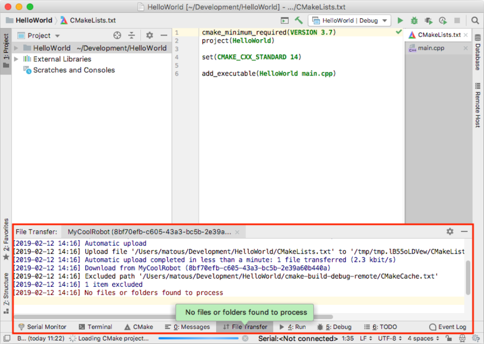 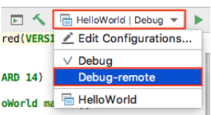
Poté následuje reload konfigurace jak je zobrazeno na obrazku.
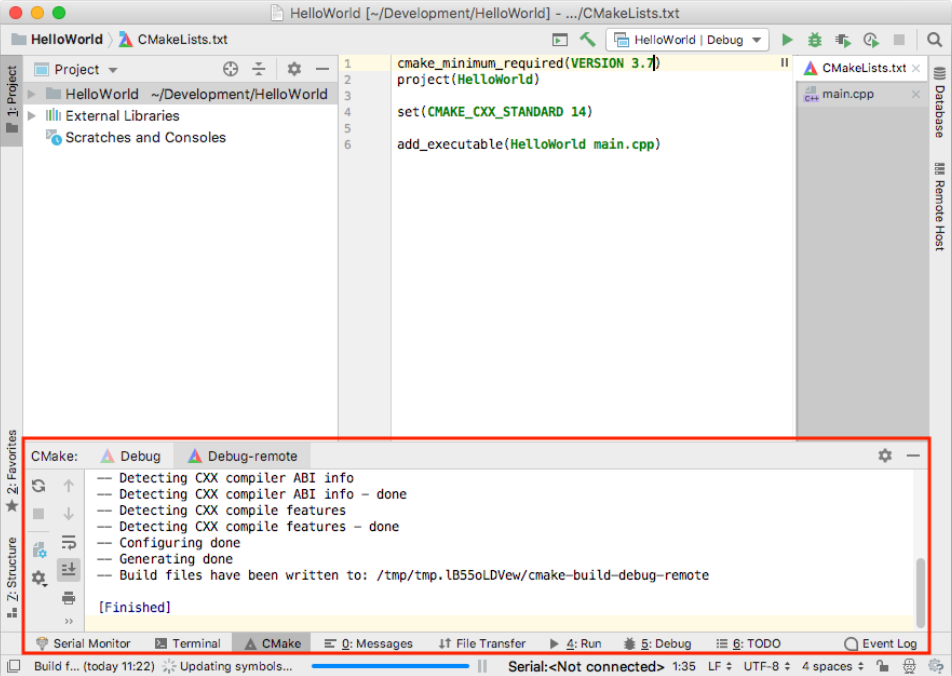
Po kliknutí na tlačítko kompilace a spuštění se náš firmware zkompiluje naRaspberry Pi a spustí se, tak jak je vidět na obrazku, kdy úspěch poznáme podle toho, že se spustitelný soubor spouští z adresáře tmp.
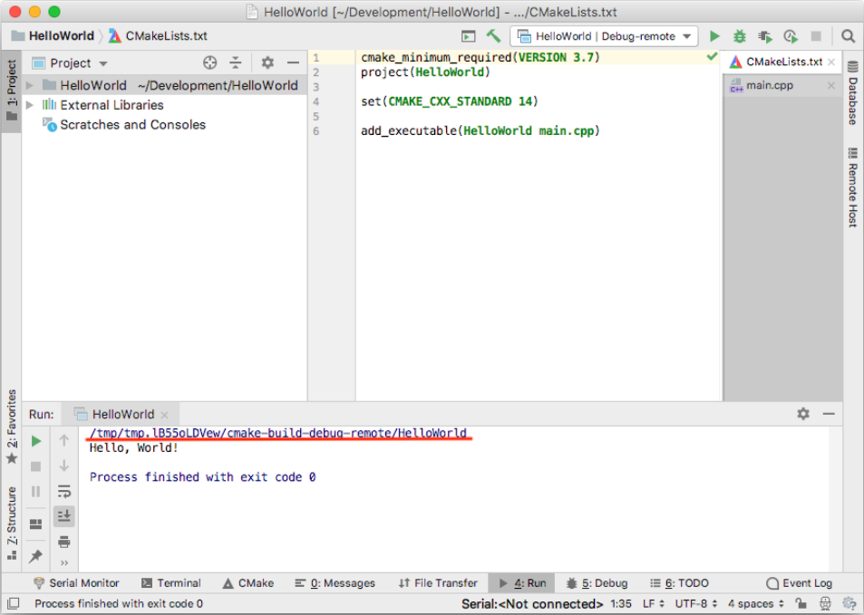
Vzdálený vývoj je nyní nakonfigurován
Troubleshooting
V této kapitole bude rozebráno řešení problémů vznikajících při použití vzdáleného vývoje.
CMake 3.12 is required. You are running version 3.7.2
Problém je ve vašem CMakeLists.txt, změňte parametr "cmake_minimum_required".
V Raspberry Pi chybí požadované soubory
Po kliknuti na slozku projektu v levem panelu, kliknete na "Deployment", "Upload to" a vyberte Raspberry Pi.
Ultimátní řešení problémů
Zkontrolujte, jestli v CMakeLists.txt jsou uvedeny všechny soubory, které se mají kompilovat. Zkuste v podokně CMake provést reload, jak je zobrazeno na obrazku. Pokud to nepomůže, přes SSH se připojte k Raspberry Pi, v /tmp smažte momentálně používanou složku pro vzdálený vývoj, restartujte CLion.

Vlastnosti jakzyka C++17 / C++20
O těchto vlastnostech jazyka jste se pravděpodobně neučili a bude dobré když je začleníte do svých znalostí
Vynucená inicializace
struct Trida {
int A;
int B;
double C;
};
// ...
Trida instance{1, 2, 3.14159265}; // Vynucena inicializace
Vynucuje inicializaci položek A,B a C v daném pořadí podle deklarace uvnitř objektu. Všechny další nastaví na 0.
Vynucené rozbalení
struct Trida {
int A;
int B;
double C;
};
// ...
Trida instance{1, 2, 3.14159265}; // Vynucena inicializace
auto [a, b, c] = instance; // vynucene rozbaleni
Jmenný alias
using NovyNazev = StaryNazev
Vytvoří zástupné jméno pro komplikovanější zápis. Používá se zejména pro zvýšení čitelnsoti.
Kdekoliv je použit NovyNazev, je to jako byl na daném místě použit datový typ StaryNazev (oba typy jsou zaměnitelné)
Priklad:
using Msg = std::vector<std::string>;
using Mediator = std::map<std::string, std::function<void(const Msg &)>>
Mediator mediator; // odpovica std::map<std::string, std::function<void(const std::vector<std::string>&)>>
Definice callbacku
std::function<deklarace funkce> Callback;
Kdykoliv potřebujete zavolat funkci s neznámým cílem funkce (koho máte volat definuje někdo jiný, nadřazený) použijete callback jako ukazatel na funkci. Tato funkce ale narozdíl od C-čkového ukazatele na funkci může být i součástí objektu. Ukazatel na funkce z jazyka C prosím nepoužívejte!
Příklad pouziti:
void funkce(std::string par)
{
// ...
}
// ...
std::function<void(std::string)> Callback; // Deklarace callbacku
Callback = &funkce; // Přiřazení koho má volat
// ...
if (Callback) // Test zdali odkaz vede na nejaky obsah
Callback("Ahoj světe"); // Zavolani obsahu
// ...
Lambda
[zachyt](argumenty) -> navratovy typ { kod funkce }
Je to deklarace těla funkce bez názvu.
Do zachyt patří všechny proměnné, které funkce potřebuje ke svému běhu, nebo & pokud chceme zachytit všechny automatické
proměnné referencí, nebo = pokud kopií. Pokud je v zachyt znak & nebo = a deklarace se nachází uvntř kontextu objektu,
tak se implcitně zachytí i tento objekt.
Návratový typ se šipkou nemusí být specifikován, odvodí se pak z kontextu (z datovéhé typu za return)
Argumenty jsou standardní argumenty funkce jako při deklaraci. Pokud je deklarace na vhodném místě ze kterého překladač pozná kontext, můžeme používat auto místo datových typů.
Příklad:
int a = 42;
auto f1 = [a]() { cout << a << endl; }; // a zachyceno hodnotou
auto f2 = [&a]() { cout << ++a << endl; }; // a zachyceno referenci, muzu jej menit
auto f3 = [=]() { cout << a << endl; }; // a zachyceno hodnotou
auto f4 = [&]() { cout << --a << endl; }; // a zachyceno referenci, muzu jej menit
auto f5 = [&]() { return this->NejakaFunkce(); }; // Navratova hodnota dedukovana jako navrat z NejakeFunkce (muze modifikovat objekt protoze zachyt referenci)
auto f6 = [=]() { this->NejakaFunkce(); }; // Pozor NejakaFunkce pracuje nad KOPII objektu - modifikuje kopii, ne puvodni objekt
f1(); // lambdu volam stejne jako funkci
Lambdy je dobre pouzivat az od C++17 protoze v C++14 a nizsim maji neintuitivni chovani ve specifickych pripadech a kompilator vyhazuje chyby ktere nejsou na prvni pohled zrejme
Procházení všech prvků kontejneru
for (auto i: <kontejner>) {
// operace s prvkem i
}
Validátor platnosti s deklarací
Pomucka pro citelnost a optimalizaci kodu - omezení platnosti proměnné pouze na úsek, kdy je platná. Pokud není platná, kompilátor ji může zahodit.
if (auto obj = DejObjekt()) {
// zde muzu pracovat s obj pokud neni null nebo operator bool() objektu ktery vratila funkce DejObjekt vraci true
}
// zde obj neexistuje
if (auto obj = DejObjekt(); Podminka) {
// zde muzu pracovat s obj pokud je podminka splnena (vraci true)
}
// zde obj neexistuje
Analogicky u while.
STL Structures
Součástí jazyka C++ je tzv. Standard Template Library (STL). Ta obsahuje širokou paletu různých datových struktur a naimplementovaných fukncí. My se dnes zaměříme na část která implementuje datové konteinery.
Knihovna obsahuje implementace pro pole, zásobník, vektor, frontu, list, množinu, mapu (hash_tabulku/dictionary), atd. Dokumentace zde.
My se dnes zamšříme na tři struktury, a totiž std::array, std::vector a std::queue.
Struktury se mezi sebou liší a každá je vhodná pro jiný účel. std::array je struktura v paměti, která má známou svou velikost již během kompilace. Pokusme se nyní takové pole vytvořit, naplnit jej hodnotami a vypočítat průměr.
#include <array>
auto my_array = std::array<int, 5>{0, 1, 2, 3, 4};
int sum = 0;
for (const auto& val : my_array) {
sum += val;
// sum += my_array.at(i); // equivalent approach
}
auto avg = sum / my_array.size();
Vektor se od pole liší tím, že má proměnnou velikost. Vždy když se naplní, tak se automaticky naalokuje navíc jednonásobek jeho současné velikosti.
Vyzkoušíme si naplnit vektor několika hodnotami a najít medián těchto hodnot.
#include <vector>
#include <algorithm>
auto my_vector = std::vector<float>{};
my_vector.push_back(5.4);
my_vector.push_back(-3.7);
my_vector.push_back(10.9);
my_vector.push_back(1.3);
my_vector.push_back(-6.5);
my_vector.push_back(-7.8);
my_vector.push_back(6.4);
std::sort(my_vector.begin(), my_vector.end());
auto med = my_vector.at(my_vector.size()/2);
my_vector.clear();
Strukturu fronty využijeme jako buffer v ilustračním scénáří zpracování příchozích dat z UDP. Uvažujme multivláknový program. Jedno vlákno přijmá data po UDP a plní frontu. Druhé vlákno pracuje asynchronně a vždy, když přijde na řadu, zpracuje všechny doposud přijaté zprávy v pořadí tak, jak příšly.
#include <queue>
// queue shared between threads; Tip: mutex ?!
auto my_queue = std::queue<std::string>{};
// receive thread filling queue with messages
my_queue.push("Message1");
my_queue.push("Message2");
my_queue.push("Message3");
// message processing thread
void parse_message(const std::string& s) {
std::cout << "Parsing: " << s << std::endl;
}
while (!my_queue.empty()) {
parse_message(my_queue.front());
my_queue.pop();
}
Reference
Reference, někdy také nazývané "alias", je datový typ, který směřuje (je aliasem) na již existujicí objekt v paměti. Při kompilaci je reference obvykle nahrazena ukazatelem, ale z pohledu programátora se jedná o výrazně bezpečnější formu práce s daty a, či objekty, protože nedovoluje některé nebezpečné operace.
Reference se liší od ukazatele ve dvou základních vlastnostech:
- Nemůže být NULL; reference je vždy nainicializovaná
- Reference se nemůže přesměrovat na jiný objekt/data.
Pozor, nezaměňovat datový typ reference "
int a = 5;
int& b = a;
const int& c = a;
b = 10;
c = 15 // invalid (const ref)
std::cout << a << std::endl; // a == 10
Reference je často používaná pro předání argumentů fukce bez nutnosti kopírování, či pro sdílení jedněch dat mezi více místy v programu.
class VeryLargeObject {
public:
VeryLargeObject() {}
const std::array<double, 10000>& data() const {return data_;}
private:
std::array<double, 10000> data_;
};
void porocess_large_data(const VeryLargeObject& d) {
auto& data = d.data(); // const reference
auto data = d.data(); // mutable copy
// ...
}
auto vlo = VeryLargeObject{};
porocess_large_data(vlo);
Reference je často pužívaná pro vrácení hodnot z funkce skrze argument funkce. Nejedná se však o best-practice metodu. Pokud je to jen trochu možné, měla by metoda vracet hodnotu skrze návratovou hodnotu. Pokud je potřeba vrátit více hodnot, použijte strukturu jako návratový typ.
void ops(float a, float b, float& sum, float& sub, float& mul, float& div) {
sum = a + b;
sub = a - b;
mul = a * b;
div = a / b;
}
float sum, sub, mul, div;
ops(5, 10, sum, sub, mul, div);
std::cout << sum << " " << sub << " " << mul << " " << div << std::endl;
Smart Pointers
Smart pointery jsou náhradou C-čkových ukazatelů. V základu máme 3 typy těchto smart ukazatelů:
- std::unique_ptr<T>
- std::shared_ptr<T>
- std::weak_ptr<T>
kde T je datový typ na který bude ukazatel ukazovat.
Vyhodou smart pointerů je, že nemusíme jako programátoři bezprostředně řešit alokaci a zejména uvolnění paměti. Jsou li splněny podmínky, smartpointer během svého zániku zavolá také destruktor objektu, na který ukazoval a uvolní naalokovanou paměť.
Výsledkem je, že programátoru už nemusí používat klíčová slova new a delete.
Každý ze smart pointerů se však mírně liší.
std::unique_ptr<T>
std::unique_ptr
#include <memory>
auto unique_int = std::make_unique<int>(5);
std::cout << *unique_int << std::endl;
float x = 10;
auto unique_float = std::make_unique<float>(x);
std::cout << *unique_float << std::endl;
std::unique_ptr<float> y = unique_float; // error
std::shared_ptr<T>
std::shared_ptr
Když čítač dosáhne nuly, to znamená, že na objekt už nic neukazuje, je automaticky zavolán destruktor a je uvolněná paměť.
Pozor, nezaměňovat s Garbage Collectorem (GC), ten funguje výrazně jinak.
Pozor na cyklické vazby. Pokud dva objekty na sebe navzájem ukazují shared pointerem, ani jeden z objektů nikdy nezanikne. Proto zde máme weak pointery.
#include <memory>
auto shared_int = std::make_shared<int>(10);
std::cout << *shared_int << std::endl;
std::shared_ptr<int> x = shared_int;
std::weak_ptr<T>
Obdoba shared_ptr, ale neinkrementuje čitač, který počítá, kolik je platných ukazatelů na daný objekt. To znamená, že pokud na objekt ukazuje 5 weak_ptr a žáden shared_ptr, objekt zanikne.
OOP
Při tvorbě Vaších programů se snažte dodržovat OOP paradigma. Přemýšlejte o programu, jako o sadě black-boxů, kdy tyto schránky jsou každá zaměřená na velmi specifický problém. Každou Vaší třídu by měla vystihovat jedna věta. Stejně tak každá funkce by měla dělat právě jednu věc a nic víc.
Zmíněné blackboxy jsou mezi sebou propojeny a navzájem si předávají data.
Vyhněte se tvorbě "supertříd", tedy tříd, které řeší "všechno". Mějte své třídy úzce specializované.
Běžně by se měla třída vměstnant do 100 řádku. Pokud je třída nad 300 řádků, silně zvažte její rozdělení na více tříd.
Oddělte data od algoritmů. Vytvořte si oddělené třídy, které v sobě mají uložená data a oddelené třídy, které implementují algoritmy pro zpracování dat.
Příklad
Naimplementujte příklad pomocí OOP C++. Při implementaci využijte reference a smart pointery.
Mějme univerzitu. Každá univerzita má 5 ročníků, v každém ročníku je libovolný počet studentů. Když studenti nastupují na univerzitu, jsou automaticky zařazeni do 1. ročníku. Vždy, když proběhne rok, tak univerzita prozkouší všechny studenty v ročnících a s pravděpodobností 0.9 posune studenta do vyžšího ročníku. Pokud student projde pátý ročníku, univerzita si jej zaznamená jako absolventa. Na konci každého roku vytiskněte stav univerzity a všech studentů na ní.
Tip: Třídy a jejich členské proměnné:
Trida Student:
promenne:
jmeno,
prijmeni
metody:
Trida Rocnik:
proměnné:
seznam_vsech_studentu
metody:
pridat_studenta_do_rocniku(student)
evaluovat_ročník() -> seznam_uspesnych_studentu
Třída Univezita:
proměnné:
seznam_rocniku
seznam absolventu
metody:
vykonat_akademicky_rok()
vytisknout_stav_univerzity();
Implementace:
#include <iostream>
#include <array>
#include <vector>
#include <memory>
#include <random>
class Student {
public:
Student(const std::string& first_name, const std::string& surname)
: first_name_{first_name}
, surname_{surname} {}
std::string first_name() const {return first_name_;};
std::string surname() const {return surname_;};
private:
const std::string first_name_;
const std::string surname_;
};
class Grade {
static constexpr float change_of_student_passes_grade = 0.8f;
public:
void add_student(std::shared_ptr<Student> stud) {students_.push_back(stud);}
std::vector<std::shared_ptr<Student>> evaluate_year() {
std::vector<std::shared_ptr<Student>> successful_students{};
std::vector<std::shared_ptr<Student>> failed_students{};
for (auto& stud : students_) {
auto random_num = get_random_number(0.0f, 1.0f);
if (random_num > change_of_student_passes_grade) {
failed_students.push_back(stud);
}
else {
successful_students.push_back(stud);
}
}
students_ = failed_students;
return successful_students;
}
std::vector<std::shared_ptr<Student>> students() const {return students_;}
float get_random_number(float min, float max) {
static std::random_device rd;
static std::mt19937 gen(rd());
static std::uniform_real_distribution<float> distr(min, max);
return distr(gen);
}
private:
std::vector<std::shared_ptr<Student>> students_;
};
class University {
static constexpr size_t no_of_grades = 5;
public:
void add_student(std::shared_ptr<Student> stud) {grades_.at(0).add_student(stud);}
void evaluate_year() {
for (int i = no_of_grades-1 ; i >= 0 ; i--) {
auto successfull_studs = grades_.at(i).evaluate_year();
if (i == no_of_grades-1) { // last grade
for (auto& stud : successfull_studs) {graduated_.push_back(stud);}
} else {
for (auto& stud : successfull_studs) {grades_.at(i+1).add_student(stud);}
}
}
}
void print_state() {
for(size_t i = 0 ; i < no_of_grades ; i++) {
std::cout << " Grade:" << i+1 << std::endl;
auto studs = grades_.at(i).students();
for (const auto& stud : studs) {
std::cout << " " << stud->first_name() << " " << stud->surname() << std::endl;
}
}
std::cout << " Graduated:" << std::endl;
for (const auto& stud : graduated_) {
std::cout << " " << stud->first_name() << " " << stud->surname() << std::endl;
}
}
private:
std::array<Grade, no_of_grades> grades_;
std::vector<std::shared_ptr<Student>> graduated_;
};
int main() {
University Oxenfurt;
Oxenfurt.add_student(std::make_shared<Student>("Triss", "Merigold"));
Oxenfurt.add_student(std::make_shared<Student>("Geralt", "of Rivia"));
Oxenfurt.add_student(std::make_shared<Student>("Zoltan", "Chivay"));
Oxenfurt.add_student(std::make_shared<Student>("Yennefer", "of Vengerberg"));
Oxenfurt.add_student(std::make_shared<Student>("Cirilla", "of Cintra"));
for (size_t i = 0 ; i < 6 ; i++) {
std::cout << " ---------- " << std::endl;
std::cout << "Year " << i+1 << std::endl;
Oxenfurt.evaluate_year();
Oxenfurt.print_state();
}
return 0;
}
Const
Rychlý přehled užití const v kódu
// Helpre Object
class Object {
public:
void do_non_const_work() {counter++;} // non-const member method
void do_const_work() const {std::cout << counter << std::endl;} // const method, can not modify member variables
private:
int counter = 0;
};
// Variables
int a = 1; // mutable variable
const int b = 2; // non-mutable (const) variable
// References
int& c = a; // mutable reference to a
const int& d = a; // const reference to a
// Pointers
int* e = &a; // pointer to a
const int* f = &a; // pointer to constant a (value of a can not be changed)
int const* g = &a; // the same
*f = 5; // error
f = e; // ok
int *const h = &a; // non-mutable (const) pointer to mutable variable
h = e; // error
*h = 5; // ok
const int * const i = &a; // const pointer to const variable
*i = 5; // error
i = e; // error
// Data Structures
std::vector<Object> v1 = {Object{}, Object{}, Object{}}; // Vector of 3 objects
const std::vector<Object> v2 = {Object{}, Object{}, Object{}}; // constant vector (can not add or remove values from it); returns const refs to object
v2.push_back(Object{}); // error
v2.clear(); // error
v2.at(0).do_non_const_work(); // error
v2.at(0).do_const_work(); // ok
// Smart Pointers
std::shared_ptr<int> sp1 = std::make_shared<int>(5); // normal shared pointer
std::shared_ptr<const int> sp2 = sp1; // shared pointer to const value
*sp2 = 5; // error
sp2 = sp1; // ok
const std::shared_ptr<int> sp3 = sp1; // constant pointer to mutable value
*sp3 = 5; // ok
sp3 = sp2; // error
const std::shared_ptr<const int> sp4 = sp1;
*sp4 = 5; // error
sp4 = sp2; // error
// Const vs Constexpr vs Define
const int x = 5; // this variable can be initialized in runtime (read user input)
#define Y = 5 // const defined for preprocessor (non type safe)
constexpr int y = 5; // this variable MUST be initialized in compile-time (similar to #define Y 5, but type-safe)
// "Rustification"
#define let const auto
#define mut auto
let a = 5; // cosnt variable
mut b = 3; // mutable variable
let& c = a; // const reference
mut& d = b; // mutable reference
Standardní kontejnery v C++
std::string
Je to kontejner, pro obyčejný text. Obsahuje základní funkce pro práci s textem.
Může sice obsahovat UTF-8, ale nepočítá jeden znak UTF-8 jako primitivu, ale jako sekvenci několika bajtů.
std::vector<typ>
Je to dynamické pole, které obsahuje prvky specifikovaného datového typu.
Jedotlivé prvky jsou indexovány od nuly
std::vector<int> vektor{
1,3,5,7,11,13,17,
};
vektor[5] = 4; // zápis do položky
cout << vektor[0] * vektor[2] << endl; // čtení z položky
if (auto p = vektor.find(13); p != vektor.end()) { // hledání prvku
cout << *p << endl; // prvek se nachází ve vektoru
}
std::unordered_map<klíč,typ>
Je to adresovatelný kontejner, kde každá hodnota má specifikovaný klíč, pod kterým ji lze najít. Kontejner zajišťuje oproti std::map co nejrychlejší adresaci za pomocí hashe.
std::unordered_map<std::string, double> mapa{
{ "PI", 3.14159},
{ "E", 2.71828},
};
mapa.emplace_back
mapa["FN"] = 598722.4879; // definice Baštincova čísla (zápis do položky)
cout << mapa["E"] * mapa["E"] << endl; // čtení z položky
if (auto p = mapa.find("ZY"); p != mapa.end()) { // hledání prvku
cout << p->second << endl; // ZY se nachází v mapě
}
Standardní algoritmy v C++
Návrhové vzory (design patterns)
Builder
Observer
Mediator
State
Robotic Operating System
Název "Robot Operating System" poněkud klame svým zněním. Nejedná se o samostaný operační sýstém, nýbrž spíše o middle-ware, tedy softwarový nástroj (knihovnu), který pomáha propojit dílčí programy do komplexnejšího celku. V praxi si to můžem představit tak, že máme jednoduchou aplikaci pro robota jezdícího po čáre, kterou realizujeme pomoci 3 navzájem spolupracujících programů (příklad funguje jako ilustrační; takového robota samozřejmě můžeme naprogramovat pomocí jednoho programu; ilustrujeme tím ale komplexnější problém). První program vyčítá data ze snímače a provádí jednoduchou filtraci dat. Druhý program je mozkem celého řešení a rozhoduje o pohybu robota. Třetí program pak přijímá řídicí pokyny a na jejich základě ovládá motory.
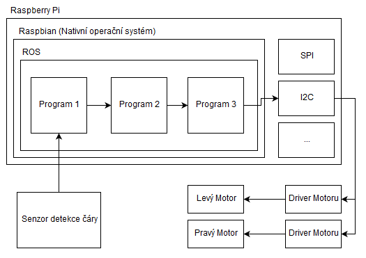
Obr: Schéma fungování pomyslého line-tracking robota na platformě Rapserry Pi s pouřitím ROSu.
V případě absence ROSu bychom museli vymyslet způsob jak tyto tři programy spolu budou komunikovat. Mohli bychom sdílet paměť, pipovat, posílat si IP zprávy, používat DBus, etc. Všechny tyto techniky fungují, ale vyžadují určitý programátorský um. My se těmito nízkouúrovňovými problémy nechceme zabývat a proto použijeme ROS.
V praxi si pak můžeme říct, že ROS komunikuje mezi procesy právě pomocí posílání UDP paketů. To umožňuje také komunikovat procesům, které běží na různých počítačích. Tomu říkáme distribuovaný systém.
Celý ROS je postaven na 4 stavebních kamenech.
- ROS Core
- ROS Node
- ROS Topic
- ROS Message
ROS Core - Zjednodušeně řečeno se jedná o IP server, který zajištujě propojení programů (Nodů), které si chtějí vyměnovat data (Message) . Core nativně otevře port 11311 na localhostu a čeká na příchozí komunikaci.
ROS Node - Nodem je myšlený každý program do kterého přídáme klinetskou knihovnu ROSu. Naučíme tedy program používat funkce ROSu.
ROS Topic - Doména, ve které se posílá specifický okruh ROS Messagů.
ROS Message - Jedna instance odeslané zprávy. V rámci ROSu je možné posílat jenom zprávy, které jsou striktně zadefinovány a mají svůj jasně daný formát. Často obsahují také časovou značku, kdy byly odeslány.
Dále si zadefinujme dva typy postavení ROS Nodů při komunikaci.
Subscriber - ROS Node, který přijímá všechny zprávy v rámci daného ROS Topicku.
Publisher - ROS Node, který vytváří a odesíla zprávy v rámci daného ROS Topicku.
Náš robot-sledující-čáru příklad si pak můžem ilustrovat takto:
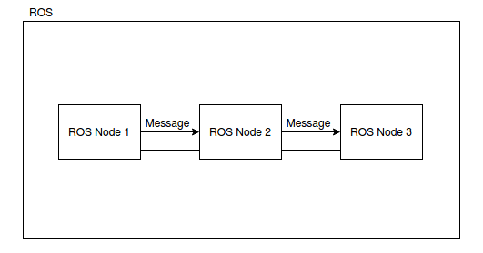
Nejprve zapneme ROS Core, tedy server, který začte poslouchat příchozí komunikaci. Dále si napíšeme zmíněne 3 programy. Jeden pro čtení dat ze snímače, druhý pro rozhodování, jak se pohybovat a třetí pro ovládání motorů. První program (Node) se přihlásí k serveru, jako publisher pro topick "SensorData". Druhý se přihlásí serveru, jako subscriber v tomtéž topicku. Server si tyto dva nody poznamená a publisherovi odešle informaci, že je v sídi na dané adrese a portu připravený subscriber, který si vyžádal data z topicku, který oba nody sdílí. Když pak první program přečte data ze snímače, vyfiltruje je a vytvoří z nich message, kterou pošle na dříve obdrženou adresu a port, aby data obdržel subscriber. Obdobným způsobem se vymění data i mezi druhým a třetím programem, pouze pod hlavičkou jiného topicku.
Nyní máme vytvořené všechny tři programy. Ty spolu komunikují, ale robot přesto nefunguje podle přestav. Tušíme, že chyba je v tom, jak druhý program převádí data ze snímače na pohyb kol. Proto si napíšeme 4. program, který bude poslouchat veškerou komunikaci a bude ji logovat do souboru. Náš nový program tedy bude subscriberem pro oba dříve zavedené topicky "SensorData" a "MotorControl". V okamžiku kdy tento program zapneme, tak se ohlásí serveru a od tohoto okamžiku všechny zprávy odeslané v topicích "SensorData" a "MotorControl" budo poslány také našemu logovcímu programu. Ten zprávy přijíme a jejich obsach včetně časové značky vytiskne do souboru. Když se pak do souboru podíváme, zjistíme, že plánovací program vatváří akční zásah vždy s opačným znaménkem, proto přídáme "-" do výpočtu akčního zásahu a vše začne fungovat.
Instalace ROS
Instalaci ROSu na nově nainstalovaný Linux proveďte pomocí návodu popsaného v kiapitole Robotic Operating System.
Instalace ROSu
Tento návod je pouze českým přepisem oficiální dokumentace (Instalace pro Ubuntu)[http://wiki.ros.org/noetic/Installation/Ubuntu]. Prim8rn2 prosím používejte oficiální verzi. Tento návod je pouze doprovodný.
Instalace je doporučená na distribuci Ubuntu 20.04 LTS (long term stable). Instalovat budeme verzi ROSu z roku 2020, Noetic.
Přidáme do Linuxu repozitáře (servery) ze kterých je možné stáhnout ROS.
sudo sh -c 'echo "deb http://packages.ros.org/ros/ubuntu $(lsb_release -sc) main" > /etc/apt/sources.list.d/ros-latest.list'
Přidáme do systému klíč pro zabezpečenou komunikace s repozitářem.
sudo apt-key adv --keyserver 'hkp://keyserver.ubuntu.com:80' --recv-key C1CF6E31E6BADE8868B172B4F42ED6FBAB17C654
Necháme baličkovací systém načíst nově přidaná data.
sudo apt update
Samotný ROS nainstalujeme příkazem. Trvá cca 10 min.
sudo apt install ros-noetic-desktop-full
A na závěr si do souboru ~/.bashrc přídáme záznam o náčítání ROSu do proměnného prostředí, kdykoliv zapneme terminál.
echo "source /opt/ros/noetic/setup.bash" >> ~/.bashrc
source ~/.bashrc
Tvorba vlastního nodu
Vytvoříme si jednoduchou aplikaci, kte jeden node bude odesílat zprávu s pořadovým číslem a časovou značkou a druhý node zprávu přijíme, vypíše a zjisti, s jakým zpožděním zpráva došla.
Nejprve si vytvoříme tzv workspace pro náš projekt. Workspacem se myslí speciálně uspořádaná složka.
cd ~/
mkdir ros_ws
cd ros_ws
mkdir src
cd src
C++ Node
Dále si pomocí catkinu (balíčkovací nástroj pro ROS) necháme vztgenerovat nový balíček (package).
catkin_create_pkg cpp_publisher std_msgs roscpp
Příkaz nám říká, že budeme volat program catkin_create_pkg a chceme po něm, aby nám vytvořil balíček cpp_publisher a připojil k němu knihovny std_msgs, která obsahuje základní sadu ROS zpráv a taktéž knihovnu roscpp, což je základní knihovana pro implementaci ROS Nodu v C++.
Nyní se náš balíček skládá z několika následujícíh souborů
~/ros_ws/src/cpp_publisher/
include/
src/
CMakeLists.txt
package.xml
Do adresářů include a src budeme ukládat naše zdrojové kódy a soubory CMakeLists.txt a package.xml slouží ke kompilaci balíčku.
CMakeLists.txt a package.xml obsahují velké množství předpřipravených direktiv, které slouží složitějším příkladům. Pro naše potřeby si můžeme tyto dva soubory smazat.
cd ~/ros_ws/src/cpp_publisher/
rm CMakeLists.txt
rm package.xml
Pomocí programu nano, nebo vim si oba soubory znovu vytvoříme tak a přidáme následující obsah.
nano CMakeLists.txt
cmake_minimum_required(VERSION 2.8.3)
project(cpp_publisher)
## Find catkin and any catkin packages
find_package(catkin REQUIRED COMPONENTS roscpp std_msgs)
## Declare a catkin package
catkin_package()
## Build talker and listener
include_directories(include ${catkin_INCLUDE_DIRS})
add_executable(cpp_publisher src/main.cpp)
target_link_libraries(cpp_publisher ${catkin_LIBRARIES})
a
nano package.xml
<?xml version="1.0"?>
<package format="2">
<name>cpp_publisher</name>
<version>0.0.0</version>
<description>The cpp_publisher package</description>
<maintainer email="my@email.todo">adash</maintainer>
<license>TODO</license>
<buildtool_depend>catkin</buildtool_depend>
<build_depend>roscpp</build_depend>
<build_depend>std_msgs</build_depend>
<build_export_depend>roscpp</build_export_depend>
<build_export_depend>std_msgs</build_export_depend>
<exec_depend>roscpp</exec_depend>
<exec_depend>std_msgs</exec_depend>
<export>
</export>
</package>
Nyní si můžeme vytvořit soubor main.cpp ve složce src a do něj napíšeme vlastní program
nano src/main.cpp
#include <sstream>
#include "ros/ros.h"
#include "std_msgs/Header.h"
int main(int argc, char **argv) {
ros::init(argc, argv, "cpp_publisher");
ros::NodeHandle n;
ros::Publisher publisher = n.advertise<std_msgs::Header>("/my_topic", 1);
ros::Rate loop_rate(10);
int count = 0;
while (ros::ok()) {
std_msgs::Header msg;
msg.stamp = ros::Time::now();
msg.seq = count++;
msg.frame_id = "origin";
publisher.publish(msg);
ros::spinOnce();
loop_rate.sleep();
}
return 0;
}
Nyní se vrátíme do kořene našeho workspacu a zavoláme příkaz pro build celého workspacu.
cd ~/ros_ws
catkin_make
Pokud se nevypíše žádná chyba, máme hotový publisher, který je uložený v ~/ros_ws/devel/lib/cpp_publisher.
Aby si Linux načetl nově zkompilované programy z našeho ros_ws přidámi si tento workspace do systémového prostředí (environmentu).
source ~/ros_ws/devel/setup.bash
Abychom tuto akci již nemuseli opakovat přidáme si tento řádek také do ~/.bashrc
echo "source ~/ros_ws/devel/setup.bash" >> ~/.bashrc
Nyní si otevřeme další 2 terminály tak, abychom celkem měli 3 okna terminálu. V jednom aktivujeme roscore
roscore
Ve druhém námi vytvořený publisher.
rosrun cpp_publisher cpp_publisher
A ve třetím si poslechneme zprávy na topicku /my_topic
rostopic echo /my_topic
Pokud vidíte v terminále výpis zpráv, vše pracuje, jak má.
Python Node
Vytvoříme si další balíček pomocí
cd ~/ros_ws/src/
catkin_create_pkg python_subscriber std_msgs rospy
a upravíme si strukturu balíčku tak, aby vypadala následovně.
~/ros_ws/src/python_subscriber/
bin/
python_subscriber.py
include/
src/
setup.py
CMakeLists.txt
package.xml
Složka bin bude soužit k uložení hlavního skriptu python_subscriber.py, include a src pro další zdrojové kódy, které ale dneska nevyužijeme a CMakeLists.txt a package.xml obdobně jako pro C++ příklad. setup.py slouží k instalaci pythoniho balíčku do workspacu.
Zmíněné soubory si pak upravíme následovně.
cmake_minimum_required(VERSION 2.8.3)
project(python_subscriber)
find_package(catkin REQUIRED COMPONENTS
rospy
std_msgs
)
catkin_package()
catkin_python_setup()
dále
nano package.xml
<?xml version="1.0"?>
<package format="2">
<name>python_subscriber</name>
<version>0.0.0</version>
<description>The python_subscriber package</description>
<maintainer email="my@email.todo">adash</maintainer>
<license>TODO</license>
<buildtool_depend>catkin</buildtool_depend>
<build_depend>rospy</build_depend>
<build_depend>std_msgs</build_depend>
<build_export_depend>rospy</build_export_depend>
<build_export_depend>std_msgs</build_export_depend>
<exec_depend>rospy</exec_depend>
<exec_depend>std_msgs</exec_depend>
<export>
</export>
</package>
pak
nano setup.py
## ! DO NOT MANUALLY INVOKE THIS setup.py, USE CATKIN INSTEAD
from distutils.core import setup
from catkin_pkg.python_setup import generate_distutils_setup
# fetch values from package.xml
setup_args = generate_distutils_setup(
packages=['python_subscriber'],
package_dir={'': 'src'},
)
setup(**setup_args)
a finálně
nano python_subscriber.py
#!/usr/bin/env python
import rospy
from std_msgs.msg import Header
def callback(message):
now = rospy.Time.now()
delta_t = (now.secs - message.stamp.secs)*1000000000 + (now.nsecs - message.stamp.nsecs)
print('seq: ' + str(message.seq))
print('frame id: ' + message.frame_id)
print('send time: ' + str(message.stamp.secs) + '.' + str(message.stamp.nsecs).zfill(9) + 's')
print('receive time: ' + str(now.secs) + '.' + str(now.nsecs).zfill(9) + 's')
print('delay [ns]: ' + str(delta_t))
print(30*'*')
def listener():
rospy.init_node('listener', anonymous=True)
rospy.Subscriber("/my_topic", Header, callback)
# spin() simply keeps python from exiting until this node is stopped
rospy.spin()
if __name__ == '__main__':
listener()
a přídáme souboru python_subscriber.py flag pro spouštění, aby bylo možné zapnout skript.
chmod +x ~/ros_ws/src/python_subscriber/bin/python_subscriber.py
Nyní se můžeme vrátit do kořene workspacu a vše ykompilovat.
cd ~/ros_ws/
catkin_make
Zaktualizujeme si proměné prostředí.
source ~/ros_ws/devel/setup.bash
Pokud máme aktivní roscore i cpp_publisher, pak zampene node pomocí
rosrun python_subscriber python_subscriber
a vidíme výpis přijímaných zpráv.
Pomocí programu rqt_graph si můžeme prohlédnout aktuální stav propojení nodů.
rosrun rqt_graph rqt_graph

Obr: vizualizace komunikace mezi nody pomocí rqt_graph
Rviz
Rviz je vizualizační nástroj, který je dodáván jako součást ROSu. Jedná se o aplikaci, která dokáže poslouchat širokou paletu předdefinovaných ROS zpráv a vizualizovat je v 3D grafickém prostředí.
Obvzkle Rviz používáme pro vizualizaci pointcloudů (mrařna bodů z LIDARu), obrázků z kamery, vykreslování geometrických primitiv v prostoru, vizualizace occupancy grid map, atd.
Pokud nám již běži roscore, rviz aktivujeme pomocí
rosrun rviz rviz
Vizualizaci konkrétního topicku pak aktivujeme pomocí
Add -> By topic -> [náš topick]
V sekci
Add -> By display type
vidíme všechny podporované typy zpráv (viz online dokumentace ROSu).
 Obr: příklad vizualizace pointcloudu a kamery v Rvizu
Obr: příklad vizualizace pointcloudu a kamery v Rvizu
Nyní si skusme vytvořit vlastní Node, který bude vykreslovat geometrické primitivum do RVizu. Vyjděme z příkladu cpp_ros_publishera a vytvořné následujicí program.
cd ~/ros_ws/src
catkin_create_pkg cpp_rviz_publisher std_msgs visualization_msgs roscpp
CMakeLists.txt
cmake_minimum_required(VERSION 2.8.3)
project(cpp_rviz_publisher)
## Find catkin and any catkin packages
find_package(catkin REQUIRED COMPONENTS roscpp std_msgs visualization_msgs)
## Declare a catkin package
catkin_package()
## Build talker and listener
include_directories(include ${catkin_INCLUDE_DIRS})
add_executable(cpp_rviz_publisher src/main.cpp)
target_link_libraries(cpp_rviz_publisher ${catkin_LIBRARIES})
package.xml
<?xml version="1.0"?>
<package format="2">
<name>cpp_rviz_publisher</name>
<version>0.0.0</version>
<description>The cpp_rviz_publisher package</description>
<maintainer email="my@email.todo">adash</maintainer>
<license>TODO</license>
<buildtool_depend>catkin</buildtool_depend>
<build_depend>roscpp</build_depend>
<build_depend>std_msgs</build_depend>
<build_depend>visualization_msgs</build_depend>
<build_export_depend>roscpp</build_export_depend>
<build_export_depend>std_msgs</build_export_depend>
<build_export_depend>visualization_msgs</build_export_depend>
<exec_depend>roscpp</exec_depend>
<exec_depend>std_msgs</exec_depend>
<exec_depend>visualization_msgs</exec_depend>
<export>
</export>
</package>
src/main.cpp
#include <sstream>
#include <ros/ros.h>
#include <visualization_msgs/Marker.h>
visualization_msgs::Marker createCuteCube(float pose) {
visualization_msgs::Marker marker;
marker.header.frame_id = "map";
marker.header.stamp = ros::Time();
marker.ns = "cube";
marker.id = 0;
marker.type = visualization_msgs::Marker::CUBE;
marker.action = visualization_msgs::Marker::ADD;
marker.pose.position.x = sin(pose);
marker.pose.position.y = cos(pose);
marker.pose.position.z = 0.1*sin(5*pose);
marker.pose.orientation.x = 0.0;
marker.pose.orientation.y = 0.0;
marker.pose.orientation.z = 0.0;
marker.pose.orientation.w = 1.0;
marker.scale.x = 0.1;
marker.scale.y = 0.1;
marker.scale.z = 0.1;
marker.color.a = 1.0;
marker.color.r = 0.0;
marker.color.g = 1.0;
marker.color.b = 0.0;
return marker;
}
int main(int argc, char **argv) {
ros::init(argc, argv, "cpp_rviz_publisher");
ros::NodeHandle n;
ros::Publisher vis_pub = n.advertise<visualization_msgs::Marker>( "/cute_cube", 0 );
ros::Rate loop_rate(100);
float pose = 0;
while (ros::ok()) {
visualization_msgs::Marker cube = createCuteCube(pose);
vis_pub.publish( cube );
pose += 0.01;
ros::spinOnce();
loop_rate.sleep();
}
return 0;
}
V Rvizu si pak otevřeme topic /cute_cube .
Distribuovaný ROS
Tím, že calý backend ROS-ové komunikace je postaven na IP komunikaci (UDP protokolu), je možné snadno komunikaci mezi Nody přenést i na jiné počítače v dostupné síti. Po nainstalování je ROS nakonfigurován tak, že veškerá komunikace s Corem probíha na adrese http://localhost:11311, a Nody si bindují dostupné volné UDP porty a skrze něj komunikují mezi sebou. Pokud ale nastavíme na lokálním stroji proměnnou ROS_MASTER_URI na jinou IP adresu, bude každý nově nastartovaný Node hledat svůj ROS Core na adrese uvedené v ROS_MASTER_URI.
Spojme si 2 počitáče skrze IP síť a ověřme, že na seba navzájem vidí příkazem PING.
ping xxx.yyy.zzz.qqq
Pokud oba počítače na sebe navzájem vidí, můžeme na počítači, kde chceme provozovat ROS Core nastavit proměnné, a aktivovat Core.
export ROS_MASTER_URI=http://localhost:11311
export ROS_IP=<ip_adresa_pocitace>
roscore
Na 2. počítači, kde poběží nody musíme nastavit prostředí tak aby dokázalo najít ROS Core v síti.
export ROS_MASTER_URI=http://<ip_adresa_coru>:<port_coru>
export ROS_IP=<ip_adresa_pocitace>
Ověřit nastavení proměnných můžeme příkazy
echo $ROS_MASTER_URI
echo $ROS_IP
Nyní, pokud aktivujeme publisher a subscriber na libovolném počítači v takto nastavené ROS síti, budou nody spolu komunikovat.
 Obr: příklad konfigurace ROSu na dvou počítačích.
Obr: příklad konfigurace ROSu na dvou počítačích.
Kam dál?
Tento tutoriál je popisuje pouze malý zlomek všech možných funkcionalit této obšírné platformy.
Oficiální web [1] - http://www.ros.org/
Oficiální tutoriály [2] - http://wiki.ros.org/ROS/Tutorials
Naučit se používat ROS Services [6]
Seznamy několika předdefinovaných ROS Messagů - [4] [5]
Pro zdatné ROSáky je možnost se posunout na další kvalitativní level, a totiž ROS 2 [3]. Druhá verze robotického operačního systému je již koncipováná jako real-time middleware s podporou QoS a širokou paletou služeb, které ocení zejména vývojáři sofistikovaných robotických řešení, na která bude kladeny řádově vyžší kvalitativní nároky.
Pro reálnou práci se zdrojovými kódy je vhodné použít nějaké IDE. V případě Linuxu vřele doporučuji programy od JetBrains, CLion pro vývoj C++ a Pycharm pro práci s pythonem. Oba programy jsou pro studenty VUT zdarma.
Reference
[1] http://www.ros.org/
[2] http://wiki.ros.org/ROS/Tutorials
[3] https://github.com/ros2/ros2/wiki
[4] http://wiki.ros.org/std_msgs
[5] http://wiki.ros.org/sensor_msgs
[6] http://wiki.ros.org/Services
[7] https://www.computerhope.com/unix/uchmod.htm
[8] http://wiki.ros.org/ROS/Installation
Supersmyčka a regulace v ní
const int T = 30;
long long ms = millis() + T;
while(rum) {
comm.send(sensor.BuildReads());
comm.send(drive.BuildReads());
while (ms < millis())
comm.loop();
ms = millis() + T;
sensor.ProcessLineSensors();
drive.ComputeOdometry();
controller.Control();
drive.ComputeMotorRamps();
comm.send(sensor.BuildWrites());
comm.send(drive.BuildWrites());
}
Mediator - Protokolový eventový parser
Controller
Někdy je třeba řídit robot v různých okamžicích různým způsobem (např. robot nejprve musí zkalibrovat senzor čáry, aby mohl vyrazit na soutěžní trať ), přičemž potřebujeme, aby důležité části chodu supersmyčky probíhaly ve správném čase
Ideální je implementace stavového automatu. Jde ji řešit hloupým a nepřehledným způsobem switch-case nebo funkcionálně
Funkcionální přístup
Nejprve musíme deklarovat ukazatel na prováděcí funkci stavu.
Pokud budou všechny stavy obsluhovány jedním objektem, je možné vytvořit ukazatel na metodu aktuálního objektu.
using State = void(StateController::*)(); // ukazatel na stavovou funkci
State state; // stav automatu
state = &StateController::DoSearchLine; // změna stavu
(this->*state)(); // vyvolání stavové funkce
Pokud však bude obsluha ve více objektech, je nutné použít lambda funkcí a std::function
using State = void(); // ukazatel na stavovou funkci
std::function<State> state; // stav automatu
state = [=](){ regulator->DoSearchLine(); } // změna stavu
(*state)(); // vyvolání stavové funkce
Doporučuji první způsob.
Řešení funkcionálním přístupem s pomocí metod aktuálního objektu
Deklarace Controlleru
class StateController {
using State = void(StateController::*)(); // MAGIE: ukazatel na metodu controlleru
public:
State state{&StateController::DoSearchLine} // Robot po startu zacne hledat caru, prvni stav
void Control(); // funkce která bude volána z main
// jednotlive stavove "funkce"
void DoSearchLine();
void DoFollowLine();
void DoTryFollowMissingLine();
void DoDanceOnFloor();
void DoBurnEverything();
// ...
}
Příklad implementací jednotlivých stavů automatu:
void StateController::Control()
{
(this->*state)(); // MAGIE: provede volání aktuálně vybrané funkce
}
// Robot hleda caru
void StateController::DoSearchLine()
{
if (!sensor.LineMissing)
state = &StateController::DoFollowLine;
}
// robot reguluje pozici na care
void StateController::DoFollowLine()
{
drive.Regulate(ForwardSpeed, sensor.ComputedDistanceFromLine);
if (sensor.LineMissing)
state = &StateController::DoTryFollowMissingLine;
}
// robot se pokousi znovu nalezt prerusenou caru
void StateController::DoTryFollowMissingLine()
{
if (!sensor.LineMissing)
state = &StateController::DoTryFollowMissingLine;
}
A samozřejmě supersmyčka v main:
StateController controller{&drive, &sensor}; // konstrukce controlleru nad daty
while(rum) {
comm.send(sensor.BuildReads());
comm.send(drive.BuildReads());
while (ms < millis())
comm.loop();
ms = millis() + T;
sensor.ProcessLineSensors();
drive.ComputeOdometry();
controller.Control(); // provede jeden krok aktualniho stavu
drive.ComputeMotorRamps();
comm.send(sensor.BuildWrites());
comm.send(drive.BuildWrites());
}
Přístup switch-case
Deklarace Controlleru
enum State {
SearchLine,
FollowLine,
TryFollowMissingLine,
DanceOnFloor,
DoBurnEverything,
}; // Deklarace stavu
class StateController {
public:
State state{SearchLine}; // Robot po startu zacne hledat caru, prvni stav
void Control(); // funkce která bude volána z main
}
Příklad implementací jednotlivých stavů automatu:
void StateController::Control()
{
switch (state) {
default:
case SearchLine:
if (!sensor.LineMissing)
state = FollowLine;
break;
case FollowLine:
drive.Regulate(ForwardSpeed, sensor.ComputedDistanceFromLine);
if (sensor.LineMissing)
state = TryFollowMissingLine;
break;
case TryFollowMissingLine:
if (!sensor.LineMissing)
state = FollowLine;
break;
}
}
Poznámka: V příkladech chybí deklarace lokálních proměnných objektu, příklady jsou uvedeny jen jako vzorové, pro pochopení funkce. Konkrétní implementaci si musíte vytvořit sami.
Chytrého nakopni, hloupého kopni, blbého zakopej 4 metry pod zem ...
Procházení komunikačním protokolem ISO/OSI
Doporučená organizace projektu
Rozdělení do tříd (abecedně):
Comm- Obsluha kompletní komunikaceConfiguration- Konfigurace načtená z yaml souboruController- Hlavní logika ovládání programuDrive- Obsluha a řízení podvozkuNmea- Implementace převodu NMEA zprávSensor- Obsluha měření a identifikace čárymain.cpp- Supersmyčka
Doporučen způsob práce kdy za funkcionalitu jedné třídy zodpovídá jedna osoba (ideálně se jménem napsaným v komentáři na začátku souboru). Nikdo jiný než vybraná osoba nesmí daný soubor commitovat.
Main je kolizní, můžou do něj všichni, ideálně v malých jednořádkových commitech. Main pokud možno modifikovat jen když jste všichni spolu a definujete API (rozdáváte práci)
main.cpp
Řeší:
- obsluha argumentů příkazové řádky
- instanciace ostatních tříd
- hlavní supersmyčka
Závisí na:
Comm- instanciace a obsluha v supersmy4ceDrive- instanciace a obsluhaSensor- instanciace a obsluhaConfiguration- instanciace, načteníController- instanciace a volání v supersmyčce
POZOR KOLIZNÍ SOUBOR (commitovat vždy zvlášť, modifikovat pouze velmi malé změny kvůli častým konfliktům)
Nmea
Řeší:
- převod z frame na zprávu
- převod ze zprávy na frame
Závisí na:
- nic
Realizace:
- Implementace 4. týden
- Spolehlivost 6. týden
Comm
Řeší:
- obsluha příjmu a odesílání UDP zpráv
- Mediátor zpráv do ostatních objektů
Závisí na
Nmea- převod protokoluConfigurationVOLITELNE - port
Realizace:
- Implementace 6. týden
- Spolehlivost 8. týden
Drive
Řeší:
- Obsluha komunikace s podvozkem
- Výpočty nad podvozkem
- Odometrie
Závisí na
Nmea- deklarace zprávConfigurationVOLITELNE - poloměr kola, rozteč
Realizace:
- Implementace 6. týden
- Spolehlivost 8. týden
Sensor
Řeší:
- Obsluha komunikace se senzory
- Parametrizace /detekce pozice čáry
Závisí na
Nmea- deklarace zprávConfigurationVOLITELNE - pozice senzoru
Realizace:
- Implementace 7. týden
- Spolehlivost 8. týden
Configuration
- Načítání parametrů z yaml souboru
- Volitelná třída, lze implementovat za pomocí konstant v kódu
- výhodné použití
yaml-cppknihovny
Závisí na
nic
Realizace:
- Implementace 8. týden
- Spolehlivost 10. týden
Controller
Řeší:
- Logika jízdy robotu
- Stavový automat pro:
- inicializace / kalibrace senzorů
- jízda po čáře (regulátor)
- jízda po přerušené čáře
- jízda po křižovatce
Závisí na
Drive- zápis rychlostí robotuSensor- čtení čáryConfigurationVOLITELNE - délka přerušení
Realizace:
- Implementace 8. týden
- Spolehlivost 10. týden
Oddělení modulů - Zrychlení kompilace
Při návrhu objektového API se setkáváme s nutností oddělení jednotlivých modulů tak, aby navzájem spolupracovaly (jeden modul využívá druhý), ale současně změna v impleentaci jednoho modulu nevyvolala nutnost rekompilace modulu druhého. Typickým příkladem je vazba nadřazený-podřazený, ale lze takto vytvořit i cyklickou závislost
Velmi špatným řešením v aplikacích bývá vytvoření globální proměnné.
Řešení lze docílit měkkou vazbou přes ukazatel na nedefinovaný objekt (tzv forward).
Příklad: Máme objekt Controller, který ve svých metodách potřebuje používat funkce z objektů Drive a Sensor.
Objekty Drive a Sensor jsou singletony (existují v aplikaci v právě jedné instanci, vytvořené nejspíše jako
lokální proměnné ve funkci main.
Forward
Aby mohly jednotlivé metody Controlleru pracovat s Drive, musí mít Controller v sobě uložený odkaz na instanci
objektu Drive. Nejspíše takto:
#include "Drive.h"
class Controller {
public:
Drive *drv;
}
Pokud však s třídou Drive pracuje pouze implementace Controlleru, kompilátor potřebuje pouze vědět, že
Drive je třída (a nic víc!) a není tak potřeba vkládat celý soubor s definicí API třídy Drive. Lze toto
zjednodušit na:
class Drive; // pouze forward
class Controller {
public:
Drive *drv;
}
a soubor s deklarací Drive vkládáme až do cpp souboru
#include "Controller.h"
#include "Drive.h"
Controller:: ......
Toto lze použít při splnění podmínek:
- Všechny přístupy ke třídě
Drivejsou přes ukazatel, nikoliv přímo- instance objektu potřebuje znát velikost tedy plnou deklaraci !
- k obsahu
drvse nepřistupuje v headeru ale v kódu cpp.- Jakékoliv inline funkce používající obsah drv potřebují znát plnou deklaraci !
Neměnný ukazatel
Dále drive by měl být konstantní ukazatel na nekonstantní instanci třídy Drive. Ukazatel nechceme nikdy měnit, ale
vlastní objekt měnit můžeme. S tím kam umístíme const bývá začátečnický problém, pro shrnutí:
Drive *drv; // ukazatel na Drive. Lze změnit ukazatel i Data na které ukazuje.
const Drive *drv; // ukazatel na konstantní Drive. Lze změnit ukazatel, Data na které ukazuje lze pouze číst.
Drive * const drv; // konstantní ukazatel na Drive. Lze změnit data, na které ukazuje. Ukazatel lze pouze číst.
const Drive * const drv; // konstantní ukazatel na konstantní Drive. Data i ukazatel lze pouze číst.
Dále nechceme, aby do ukazatele v inicializaci instance Controlleru někdo vložil nullptr (nedává to v API smysl,
bez instance Drive neumí Controller žít). Navíc nechceme použít pointerovou aritmetiku (z principu se jí
vyhýbáme, kde to jde). Místo konstantního ukazatele Drive * const ptr použijeme referenci Drive & ptr.
Pozor reference je vždy konstantní, takže nám jedno const odpadá !
Drive & drv; // reference na Drive. Lze změnit Data na které ukazuje. Ukazatel ne.
Vzorové řešení
Objekt Controller tedy deklarujeme v headeru takto:
class Drive; // pouze forward
class Controller {
public:
Controller(Drive & aDrive);
void Method();
private:
Drive & drv;
}
A implementujeme v cpp souboru takto:
#include "Controller.h"
#include "Drive.h" // metody controlleru už smí používat API Drive
Controller::Controller(Drive & aDrive)
: drv{aDrive}
{
}
void Controller::Method()
{
drv->CallMe(); // Můžeme používat API
}
Cyklická závislost
Stejným způsobem lze definovat, že Drive může přistupovat k prvkům Controlleru. Standardním způsobem deklarace
bysme vytvořili cyklickou závislost mezi headery a kód by (logicky) nešel zkompilovat:
Drive.h:
#include "Controller.h"
class Drive {
Controller & ctrl;
}
Controller.h:
#include "Drive.h"
class Controller {
Drive & drv;
}
Řešení cyklické závislosti bylo již uvedeno:
class Controller;
class Drive {
Controller & ctrl;
}
Controller.h:
class Drive;
class Controller {
Drive & drv;
}